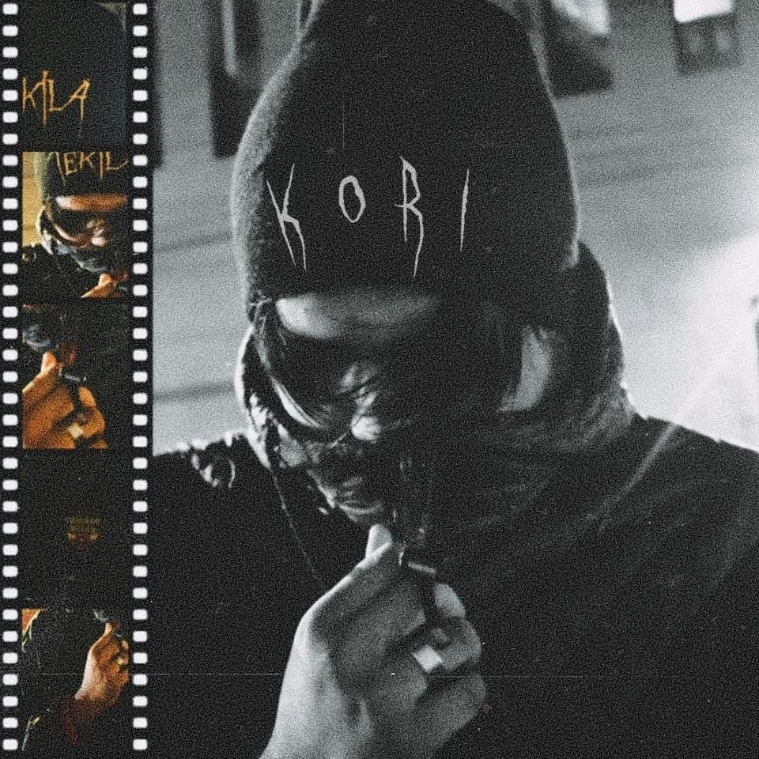

Música & Videos
Pronto habrá más música disponible.

Descripción del Artista
Kori es un talentoso artista originario de Guadalajara, Jalisco. Con tan solo 23 años, ha logrado crear un estilo único que fusiona el trap sad y el rap. Su música está inspirada por artistas como Keyblade y Cyclo, lo que le ha permitido construir un sonido distintivo que resuena con muchos. Siempre en evolución, Kori está dedicado a ofrecer más de su arte al mundo.